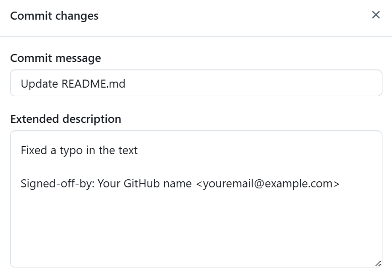
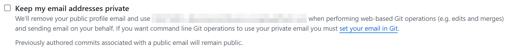

Сертификат разработчика об оригинальности кода (DCO)
Что такое DCO и зачем он нужен?
Developer Certificate of Origin (DCO) – это упрощенная форма юридического подтверждения, используемая во многих open-source проектах вместо подписания отдельных соглашений с участниками.
Добавляя подпись в коммит (sign-off), разработчик подтверждает своё авторство или законность предоставления этого кода и даёт право проекту использовать и распространять этот вклад на условиях лицензии проекта.
В отличие от Contributor License Agreement (CLA), который оформляется как отдельный документ, DCO — это утверждение, встроенное в сообщение каждого коммита. Таким образом, каждый вклад сопровождается заявлением об его происхождении и лицензии, а ответственность за легитимность кода декларирует сам контрибьютор, подписывая каждый коммит.
Как работает DCO: Разработчик указывает своё согласие с условиями DCO, добавляя специальную строку “Signed-off-by” в конец сообщения каждого коммита. Эта строка означает, что разработчик подписывает сертификат происхождения для данного изменения.
⚠️ “Подписать коммит” в контексте DCO означает добавить текстовую подпись, а не цифровую подпись GPG.
Полный текст DCO версии 1.1
Оригинальный источник: developercertificate.org
Ниже приведён полный текст Developer Certificate of Origin версии 1.1, переведенный на русский язык.
Сертификат разработчика (Developer Certificate of Origin)
Версия 1.1
Авторские права (C) 2004, 2006 Фонд Linux и его участники.
Каждому разрешается копировать и распространять дословные копии этого
лицензионного документа, но его изменение не допускается.
Сертификат разработчика версии 1.1
Внося вклад в этот проект, я подтверждаю, что:
(a) Вклад был создан полностью или частично мной, и у меня есть право
предоставить его в рамках указанной в файле лицензии с открытым исходным кодом; или
(b) Вклад основан на предыдущей работе, которая, насколько мне известно,
охватывается соответствующей лицензией с открытым исходным кодом, и у меня
есть право в соответствии с этой лицензией предоставить эту работу с
изменениями, созданными полностью или частично мной, в рамках той же
лицензии с открытым исходным кодом (если мне не разрешено представить ее
по другой лицензии), как указано в файле; или
(c) Вклад был предоставлен мне напрямую другим лицом, которое подтвердило
соответствие пунктам (a), (b) или (c), и я не вносил в него изменений.
(d) Я понимаю и соглашаюсь с тем, что этот проект и мой вклад являются
общедоступными, и что запись о вкладе (включая всю персональную информацию,
которую я предоставляю вместе с ним, включая мою подпись) будет храниться
бессрочно и может быть перераспространена в соответствии с условиями
данного проекта или лицензиями с открытым исходным кодом, применимыми к нему.
Проект, требующий DCO, подразумевает, что все контрибьюторы соглашаются с этим текстом. Добавляя строчку “Signed-off-by” в коммит, вы подтверждаете, что выполнили условия, перечисленные в DCO, для данного вклада.
Как подписывать коммиты (DCO Sign-off)
Чтобы “подписать” свой коммит в рамках DCO, необходимо добавить в конец сообщения коммита строку следующего вида:
Вы можете прописать эту строку вручную при написании сообщения коммита. Однако Git предоставляет удобный флаг, который сделает это за вас. Используйте опцию -s или --signoff при создании коммита. Например:
Эта команда автоматически добавит строку “Signed-off-by” в сообщение коммита, используя имя и email из вашей конфигурации Git.
Поэтому очень важно заранее правильно настроить параметры user.name и user.email в Git. Проверьте, что git config user.name содержит ваше настоящее имя, а git config user.email – ваш email. Установить их (глобально для всех репозиториев) можно так:
Эти настройки определяют, как вы будете указаны в каждом коммите (автор коммита) и соответственно используются для заполнения строки подписи.
Имя и почтовый адрес в строке “Signed-off-by” должны точно совпадать с именем и почтовым адресом автора коммита, иначе проверка DCO может не засчитать подпись.
Когда Git автоматически ставит подпись через -s, он берёт именно эти настройки. Поэтому убедитесь, что email тот же самый, который привязан к вашему аккаунту GitHub, иначе бот DCO укажет на несоответствие автору.
⚠️ Важно не путать DCO-sign-off с криптографической подписью коммита. DCO — это просто текстовая декларация в сообщении, а не криптографическая проверка. Флаг -s добавляет текст “Signed-off-by”, не выполняя никакого шифрования. В то время как флаг -S означает прикрепить к коммиту цифровую подпись GPG для подтверждения личности. DCO этого не требует.
Если вы случайно использовали git commit -S вместо -s, учтите, что для DCO проверяется именно наличие строки в тексте коммита. Вы можете, конечно, использовать оба флага вместе (git commit -S -s), чтобы и подписать коммит цифровой подписью, и добавить DCO-подпись. Но для соблюдения DCO достаточно -s.
Типовые ситуации и способы добавить подпись DCO
Рассмотрим распространённые ситуации, связанные с отсутствием “Signed-off-by” и методами их исправления:
Локальный коммит без подписи DCO
Ситуация: Вы сделали один или несколько коммитов в локальном репозитории, но забыли добавить строку “Signed-off-by” в сообщение. Эти коммиты ещё не отправлены на сервер (например, Pull Request ещё не создан).
Решение: Самый простой способ – использовать команду amend, чтобы отредактировать последний коммит и добавить подпись, вместо создания нового коммита.
или
Эта команда откроет ваш последний коммит для редактирования (или автоматически добавит подпись без изменения остального текста, если запустить с флагом --no-edit), и включит строку “Signed-off-by” с вашим именем и email.
Содержимое самого коммита (изменения в коде) не поменяется, изменится только сообщение. После этого у последнего коммита появится DCO-подпись.
Если коммитов несколько, и подпись отсутствует в каждом - смотрите ниже про интерактивный rebase. Но если вы работаете лишь с самым последним коммитом, этого достаточно.
Теперь можно проверить, добавилась ли подпись: выполните git log -1 и убедитесь, что в сообщении присутствует “Signed-off-by: …”.
Коммит уже отправлен на GitHub без подписи
Ситуация: Вы уже отправили коммит(ы) на удалённый репозиторий (например, открыли Pull Request), и бот DCO сообщила об ошибке, потому что в сообщении коммита нет строки с подписью.
Решение: Нужно исправить историю коммитов, добавив в них подпись, и затем принудительно отправить обновлённую историю на GitHub. Для одного последнего коммита, как в предыдущем случае, можно просто воспользоваться amend:
После этого Pull Request на GitHub обновится, и проверка DCO должна пройти, поскольку сообщение коммита теперь содержит необходимую подпись.
Если вы забыли поставить подпись не в самом последнем коммите, а в одном из предыдущих в ветке, придётся немного переписать историю:
- Можно выполнить интерактивный rebase (см. следующий сценарий) и отредактировать сообщение того коммита.
- Либо, если забыта подпись в единственном старом коммите - сделайте rebase до этого коммита и примените --signoff. Например, git rebase --signoff SHA^ (где SHA – хеш коммита без подписи) перенесёт все коммиты начиная с него, добавляя подписи.
В общем случае, исправление одного отправленного коммита сводится к тому, чтобы его отредактировать и переписать удалённую историю коммитов.
Несколько коммитов без подписей
Ситуация: Ваш Pull Request содержит несколько коммитов, и для одного или более из них отсутствует строка “Signed-off-by”. В результате проверка DCO не проходит. Нужно подписать все эти коммиты, не потеряв их изменения.
Решение: Используем возможности rebase в Git, чтобы добавить подпись к каждому коммиту. Это можно сделать двумя способами - автоматически или вручную через интерактивный режим:
Автоматическое добавление подписей:
Вы можете воспользоваться опцией --signoff у команды rebase. Она сама допишет “Signed-off-by” в каждый коммит, который ребейзится. Например, если у вас 3 последних коммита в ветке и все они без подписи, выполните:
Git автоматически изменит последние 3 коммита, добавляя строку подписи (с вашими именем и email из настроек) в каждый из них. После успешного завершения внесения правок вам останется отправить изменения:
Интерактивный rebase (ручной способ):
Вы можете использовать интерактивный режим rebase. Допустим, у вас 3 коммита без подписи. Запустите команду с опцией -i:
Откроется редактор со списком этих коммитов. Замените слово pick перед каждым коммитом на reword.Закройте файл редактора, после чего Git начнёт перебор коммитов. Для каждого коммита он по очереди откроет ваш редактор для изменения сообщения. В каждом таком сообщении просто добавьте строку “Signed-off-by: …” в конец. Сохраните и выйдите.
Альтернативно, вы можете выйти из редактора без изменений и выполнить команду:
Эта команда автоматически допишет подпись и закоммитит.
Для перехода к следующему коммиту выполните:
Повторяйте, пока не пройдёте все перечисленные коммиты. В итоге, после добавления подписей ко всем, выполните отправку изменений в удаленный репозиторий:
В некоторых случаях, если коммитов очень много и исправлять вручную долго, можно выполнить squash всех коммитов в один, добавить подпись и отправить заново.
Это уберёт промежуточные коммиты, но гарантированно добавит подпись хотя бы в итоговый коммит.
В команде выше, N – число коммитов, пометьте первый коммит как pick, остальные как squash, и когда откроется редактор сообщения – впишите сообщение для коммита и добавьте “Signed-off-by”. Затем force-push.
⚠️ Убедитесь, что такой шаг согласован с поддерживающими проект – иногда история коммитов в PR важна
Подпись при использовании squash/rebase перед слиянием
Ситуация: Вы собираетесь объединить (squash) свои коммиты или сделать rebase ветки на актуальную версию основной ветки перед слиянием, и хотите удостовериться, что после этих операций все коммиты (или итоговый коммит) имеют DCO-подпись.
Что необходимо учесть:
- Если вы сквошите несколько коммитов, которые все уже имели sign-off, итоговый коммит может содержать несколько строк “Signed-off-by” (по одной от каждого исходного коммита). Это нормально. В DCO нет ограничения на количество подписей – важно, что хотя бы одна соответствует автору финального коммита. Часто при squash сохраняют все подписи, чтобы отразить вклад нескольких авторов, если они были.
- Если вы сквошите коммиты, среди которых были неподписанные, вам обязательно нужно добавить подпись в сообщении объединённого коммита. При выполнении
Можно скопировать её из одного из сообщений (если хоть где-то была) или набрать вручную. - При выполнении команды
ваши коммиты перезаписываются поверх свежих. Если в них уже были подписи, они сохранятся.
💡 Проще всего – всегда добавлять опцию -s при любых коммитах, тогда и при rebase, и при squash у вас не возникнет проблем с подписью.
Как подписать коммит, созданный через интерфейс GitHub
При создании коммитов через веб-интерфейс есть особенность: по умолчанию GitHub не добавляет строку “Signed-off-by:“, которая требуется для соблюдения DCO.
Чтобы добавить подпись вручную, в поле описании коммита "Extended description", добавьте строку подписи в формате:

Когда вы создаёте коммиты через веб-интерфейс GitHub, может автоматически использоваться приватный email, например:
Если GitHub использует noreply email — просто подпишите коммит тем же адресом:
Или отключите приватность email: - Перейдите в Settings → Emails - Отключите опцию "Keep my email addresses private"

Проверка DCO ботом при Pull Request
Когда вы создаёте Pull Request в репозитории, где включён DCO, обычно подключается автоматическая проверка – часто посредством бота DCO (GitHub App) или CI. Этот бот проверяет каждый коммит в вашем PR на наличие правильной подписи.
В интерфейсе GitHub вы увидите статус, например: DCO — All commits have a DCO sign-off (если всё хорошо) или сообщение об ошибке, если что-то не так. Часто DCO-проверка отмечается красным крестиком ❌ и текстом вроде “All commits must have a DCO sign-off from the author”, если найдены проблемы.
Бот DCO проверяет каждое сообщение коммита на две вещи: 1. Наличие строки “Signed-off-by:”. Если хотя бы в одном коммите её нет, проверка сразу падает. 2. Совпадение имени и email между строкой подписи и данными автора коммита.
Например, если автор коммита – “Ivan Ivanov ivan@example.com”, то бот ожидает увидеть “Signed-off-by: Ivan Ivanov ivan@example.com”. Если там “Ivan ivan@example.com” (без фамилии) или email отличается хотя бы символом, проверка не пройдёт.
Когда проверка DCO падает, бот обычно оставляет комментарий в PR с указанием на проблему. Он может указать хеш коммита и причину: “Missing Signed-off-by” или “Expected Signed-off-by: X, but got Y”. Также он подскажет, что делать – например, советует выполнить определённые команды Git для исправления.
Фактически, бот вам даёт инструкцию, как привести PR в соответствие.